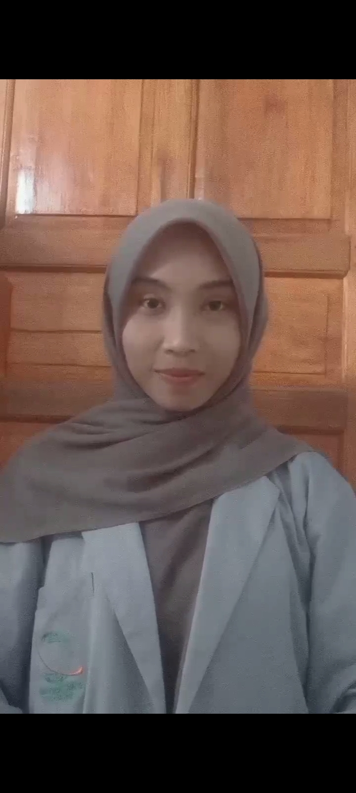
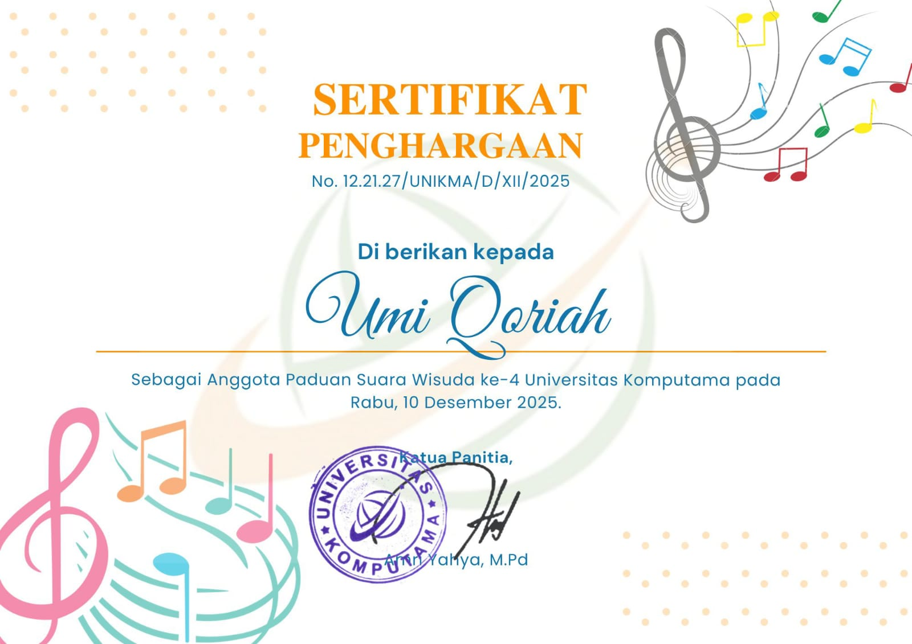
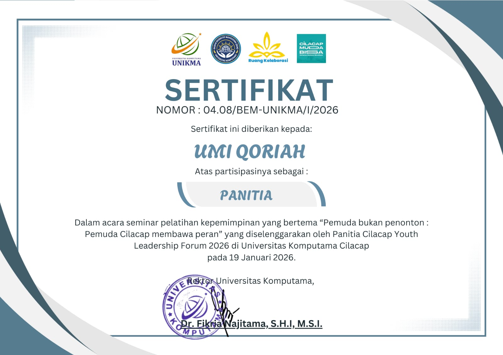
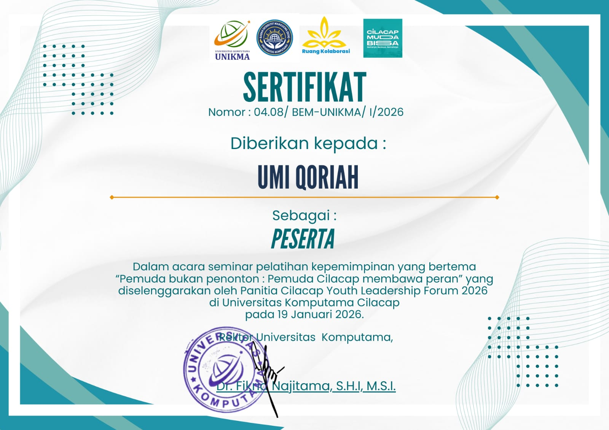
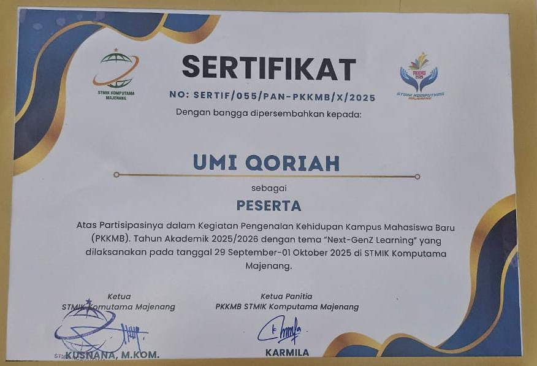
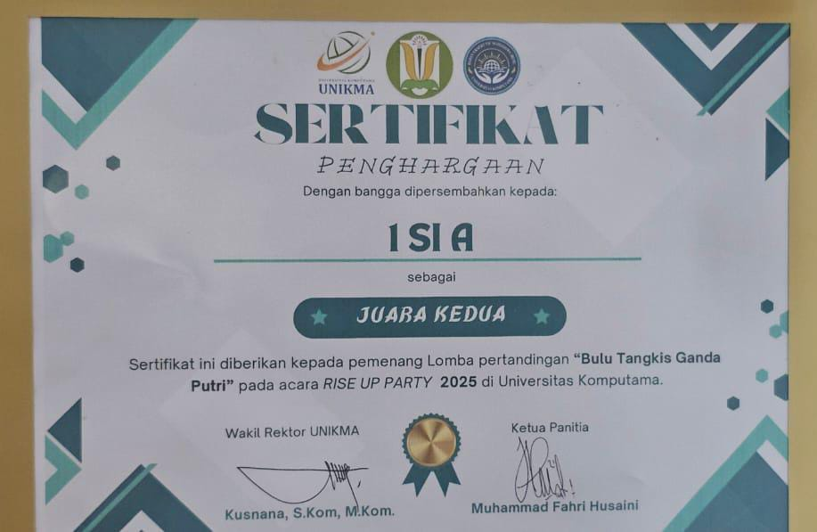

Halo! Perkenalkan, nama saya Umi Qoriah — mahasiswi aktif Program Studi Sistem Informasi di Universitas Komputama (UNIKMA) Cilacap. Saya adalah pribadi yang penuh semangat, tidak kenal lelah, dan selalu berani mencoba hal baru, baik di akademik maupun olahraga.
Jiwa kompetitif dan rasa ingin tahu yang tinggi mendorong saya untuk terus bertumbuh — dari lapangan olahraga hingga ruang kelas teknologi, setiap pengalaman membentuk versi terbaik dari diri saya.
Menjadi profesional teknologi informasi yang berdedikasi tinggi, berkarakter kuat, and mampu memberikan dampak positif bagi masyarakat melalui inovasi yang berarti.
"Jangan pernah takut untuk selalu mencoba berbagai percobaan di sekitar kita, karena setiap percobaan yang telah kita dapatkan pasti ada hasilnya."
Sejak kecil saya jatuh cinta pada dunia olahraga. Hampir semua cabang saya gemari, dan beberapa mengantarkan saya meraih sertifikat dan piala dari sekolah: Voli, Futsal, Badminton, dan Lari.
Olahraga mengajarkan strategi, kerja tim, ketangguhan mental, dan keberanian — nilai yang saya bawa pula ke dunia Sistem Informasi. Saya aktif mengajarkan teman-teman sekelas berbagai teknik olahraga, karena berbagi adalah kebahagiaan tersendiri.
Sekolah Dasar yang pertama kali saya awali untuk membentuk fondasi dan karakter belajar. Lingkungan sekolah yang hangat membentuk nilai kedisiplinan, rasa percaya diri, rasa bersyukur, dan kemandirian yang saya bawa hingga sekarang.
Selama tiga tahun saya belajar, tumbuh, dan menjadi lebih baik bersama. Saya memulai perjalanan ini dengan semangat, rasa ingin tahu, dan kebersamaan yang hingga kini masih saya jaga erat.
Di jenjang ini saya menjelajahi ilmu lebih dalam, mengembangkan potensi, dan mulai membentuk visi masa depan. Perjalanan tiga tahun yang saya jalani dengan penuh semangat dan keberanian.
Saat ini menempuh studi Sarjana di Prodi Sistem Informasi UNIKMA Cilacap. Mendalami pemrograman, analisis sistem, basis data, rekayasa perangkat lunak, dan kecerdasan buatan.
Proyek yang dikerjakan selama studi di UNIKMA Cilacap.
Aplikasi web pengelola jadwal latihan, hasil pertandingan, dan data atlet. Dibangun dengan PHP, MySQL, and Bootstrap untuk memudahkan administrasi olahraga sekolah.
Menampilkan data prestasi akademik dan non-akademik dalam grafik interaktif (Chart.js + PHP) untuk membantu guru memantau perkembangan siswa secara real-time.
Website sekolah dengan CMS sederhana. Menampilkan info sekolah, berita, and galeri kegiatan secara dinamis tanpa keahlian teknis mendalam dari admin.
Aplikasi mobile-first untuk mencatat aktivitas olahraga harian, target, and progres pencapaian menggunakan HTML, CSS, JavaScript, and Firebase.
Desain antarmuka portal informasi mahasiswa di Figma dengan prinsip UX Research, persona mapping, and high-fidelity prototype interaktif.
Momen berharga dalam perjalanan saya.

Olahraga
Prestasi
Kampus
Kegiatan
TemanMeraih sertifikat dan piala dalam kompetisi voli tingkat sekolah. Aktif melatih teman sekelas teknik dasar voli.
Aktif dalam turnamen futsal antar sekolah, memberikan kontribusi nyata dalam kerja tim.
Menjuarai pertandingan badminton tingkat sekolah dan mendapat penghargaan dari pihak sekolah.
Aktif dalam lomba lari, mengembangkan ketahanan fisik serta mental melalui latihan rutin.
Ingin berkolaborasi, berdiskusi, atau sekadar menyapa? Jangan ragu untuk menghubungi saya!
Umi Qoriah · Mahasiswi Sistem Informasi
UNIKMA Cilacap